Зародыш — одна клетка с 16 000 000 единичных бит. За такт клетка отдаёт соседям доли своих бит, остаток остаётся; соседи могут обменяться долями. Ни один бит не рождается и не исчезает. Часть правил детерминирована, часть — случайна: «Бог играет в кости».
Клетка хранит счётчик бит. Зародыш — одна клетка в центре с N = 16 000 000. За такт клетка делит свои биты на 7 долей: 6 — соседям по направлениям, 1 — себе. Доли можно ограничить сверху (K бит на направление): тогда в центре остаётся плотное ядро, а наружу уходит фронт. Обмен — соседи меняются 10% долей; это и есть обменное взаимодействие, оно сохраняет сумму.
c·t: бит за такт переходит не более чем на одну клетку.Меняются веса направлений (равномерно, по x/z, радиально наружу) и предел K. Радиальный поток даёт оболочку, K — ядро с гало.
| ID | веса | K | обмен | клеток | фронт | max log | сжатие | класс |
|---|---|---|---|---|---|---|---|---|
C01 | uniform | None | none | 23 269 | 18.1 | 4.11 | 0.003 | облако |
C02 | uniform | 20000 | none | 13 331 | 15.0 | 7.02 | 0.002 | ядро+гало |
C03 | x | None | none | 26 464 | 19.2 | 4.35 | 0.006 | облако |
C04 | z | None | none | 22 206 | 18.2 | 4.16 | 0.004 | облако |
C05 | radial | None | none | 134 263 | 37.3 | 3.62 | 0.011 | радиальная оболочка |
C06 | radial | None | x | 142 213 | 38.9 | 3.54 | 0.012 | радиальная оболочка |
C07 | radial | None | all | 158 393 | 39.6 | 3.42 | 0.020 | радиальная оболочка |
C08 | radial | 2000 | none | 52 423 | 31.3 | 7.18 | 0.006 | ядро+гало |
C09 | radial | 20000 | x | 96 983 | 35.0 | 6.30 | 0.009 | ядро+гало |
C10 | radial | 500 | none | 30 909 | 27.8 | 7.20 | 0.004 | ядро+гало |
C11 | diag | None | none | 19 747 | 18.3 | 4.22 | 0.004 | облако |
C12 | uniform | None | all | 27 974 | 19.2 | 4.02 | 0.005 | облако |
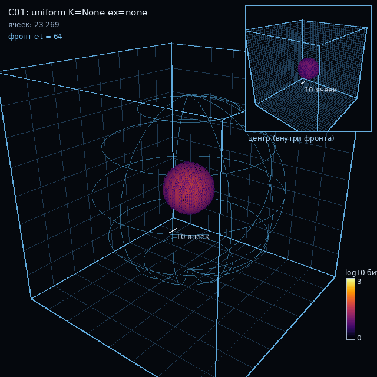
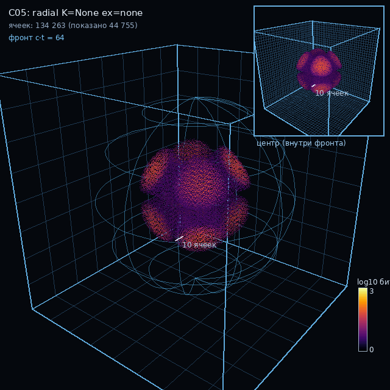
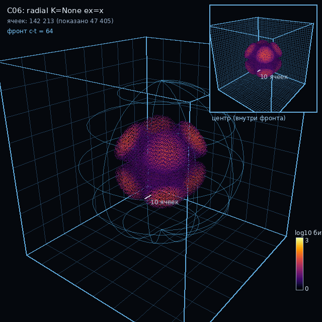
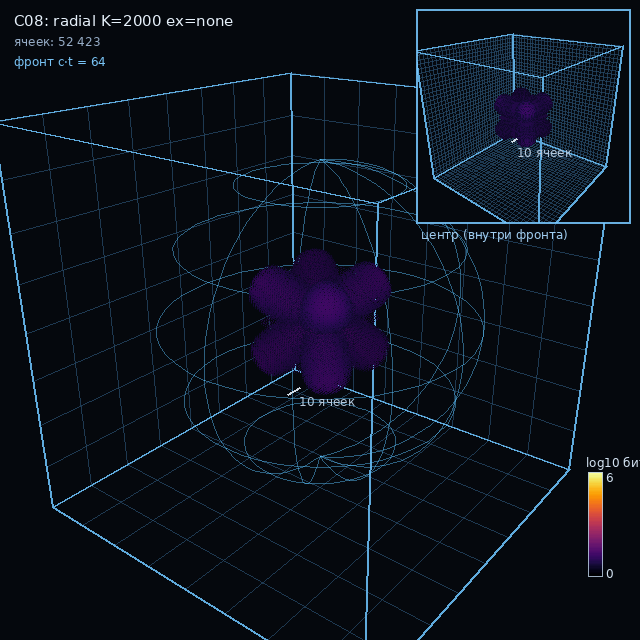
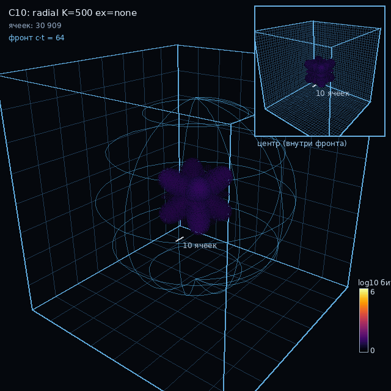
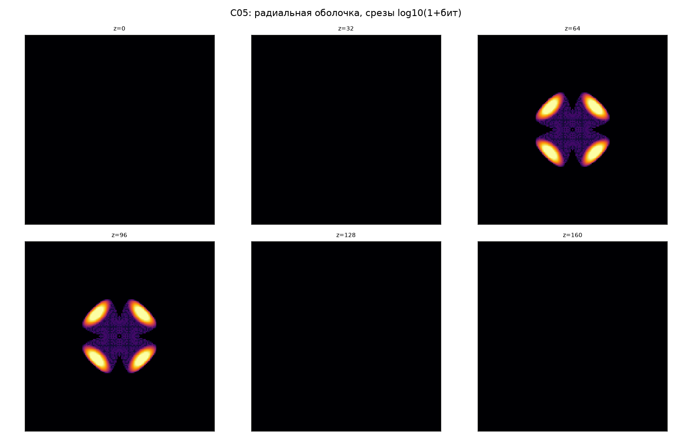
Четыре случайных правила: случайные три направления, случайный поворот радиальных весов, случайный обмен и случайные целые веса. Каждое прогнано с тремя сидами. Сумма бит сохраняется в каждом прогоне — случайность меняет куда идут биты, но не сколько их.
| ID | режим | сид | клеток | фронт | max log | сжатие | время |
|---|---|---|---|---|---|---|---|
G01-s1 | split | 1 | 25 619 | 20.1 | 4.49 | 0.006 | 9.8 с |
G01-s2 | split | 2 | 25 931 | 20.0 | 4.47 | 0.006 | 9.7 с |
G01-s3 | split | 3 | 25 571 | 20.3 | 4.58 | 0.006 | 10.1 с |
G02-s1 | rot | 1 | 25 343 | 19.3 | 4.37 | 0.006 | 17.6 с |
G02-s2 | rot | 2 | 25 076 | 19.3 | 4.29 | 0.006 | 17.3 с |
G02-s3 | rot | 3 | 24 982 | 19.1 | 4.36 | 0.006 | 17.2 с |
G03-s1 | swap | 1 | 142 527 | 38.2 | 3.56 | 0.019 | 14.4 с |
G03-s2 | swap | 2 | 142 694 | 38.2 | 3.56 | 0.019 | 13.6 с |
G03-s3 | swap | 3 | 143 218 | 38.3 | 3.56 | 0.019 | 13.5 с |
G04-s1 | weights | 1 | 30 724 | 21.4 | 4.48 | 0.007 | 12.0 с |
G04-s2 | weights | 2 | 30 361 | 21.0 | 4.54 | 0.007 | 13.3 с |
G04-s3 | weights | 3 | 29 978 | 21.3 | 4.61 | 0.007 | 14.1 с |
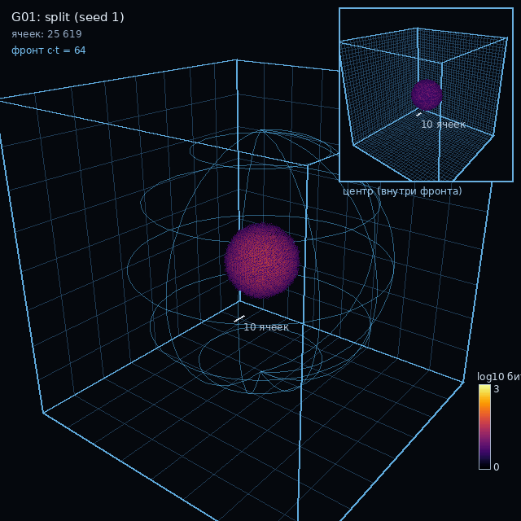
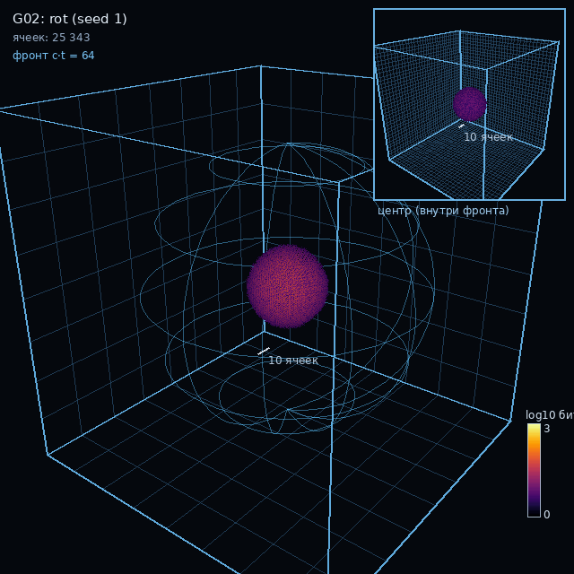
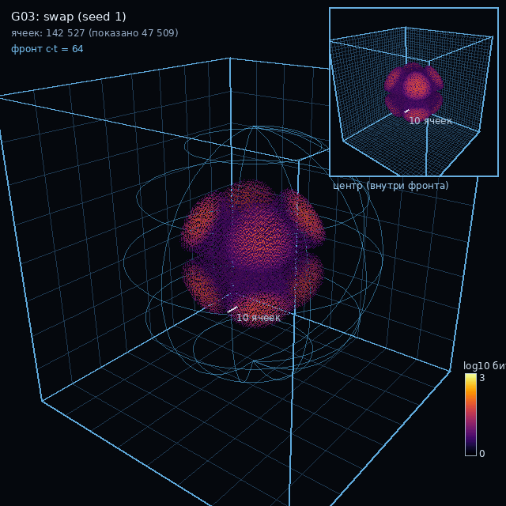
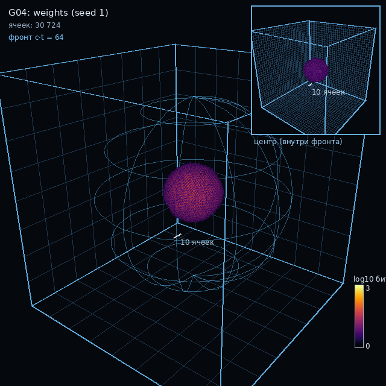
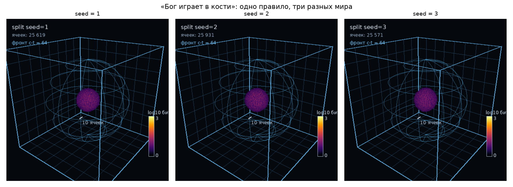
Три сида одного правила дают разные детали, но при 16 млн бит крупные черты (радиус, оболочка) устойчивы: случайность меняет микроструктуру, а не закон сохранения. Разброс по числу активных клеток и фронту — в таблице.
K оставляет плотное ядро и гало.| Проверка | Статус | Значение |
|---|---|---|
| 12 правил прогнаны | PASS | 12 |
| сумма бит сохраняется во всех правилах | PASS | {'start': 16000000, 'ends': [16000000]} |
| фронт не обгоняет c·t | PASS | 39.6 |
| есть разные морфологии | PASS | ['облако', 'радиальная оболочка', 'ядро+гало'] |
| активных клеток меньше объёма | PASS | 0.038 |
| картинки созданы | PASS | 5 |
| 12 стохастических прогонов | PASS | 12 |
| сумма бит сохраняется во всех | PASS | [16000000] |
| фронт не обгоняет c·t | PASS | 38.3 |
| разные сиды дают разные картины | PASS | [[25619, 20.1], [25931, 20.0], [25571, 20.3]] |
| картинки созданы | PASS | 4 |
src/ca3d_cloud.py — доли, обмен, случайные режимыscripts/run_ca3d4.py — 12 правил, report.jsonscripts/run_ca3d4_god.py — 12 прогонов, god.jsonscripts/build_ca3d4_report.pyЧасти 1–3: инфляционная решётка, сети и блобы, консервативный битовый автомат.